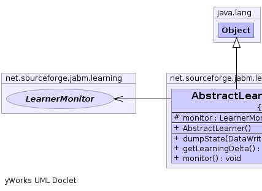
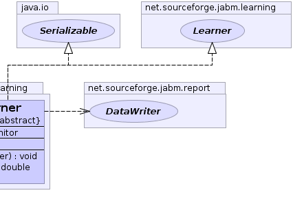

net.sourceforge.jabm.learning.AbstractLearner
net.sourceforge.jabm.learning.AbstractLearner
|
|||||||||
| PREV CLASS NEXT CLASS | FRAMES NO FRAMES | ||||||||
| SUMMARY: NESTED | FIELD | CONSTR | METHOD | DETAIL: FIELD | CONSTR | METHOD | ||||||||
java.lang.Object
public abstract class AbstractLearner
|  |  |
| Field Summary | |
|---|---|
protected LearnerMonitor |
monitor
|
| Constructor Summary | |
|---|---|
AbstractLearner()
|
|
| Method Summary | |
|---|---|
abstract void |
dumpState(DataWriter out)
Write out our state data to the specified data writer. |
abstract double |
getLearningDelta()
Return a value indicative of the amount of learning that occured during the last iteration. |
void |
monitor()
A hook to provide monitoring functionality. |
| Methods inherited from class java.lang.Object |
|---|
clone, equals, finalize, getClass, hashCode, notify, notifyAll, toString, wait, wait, wait |
| Field Detail |
|---|
protected LearnerMonitor monitor
| Constructor Detail |
|---|
public AbstractLearner()
| Method Detail |
|---|
public void monitor()
Learner
monitor in interface Learnerpublic abstract double getLearningDelta()
Learner
getLearningDelta in interface Learnerpublic abstract void dumpState(DataWriter out)
Learner
dumpState in interface Learner
|
|||||||||
| PREV CLASS NEXT CLASS | FRAMES NO FRAMES | ||||||||
| SUMMARY: NESTED | FIELD | CONSTR | METHOD | DETAIL: FIELD | CONSTR | METHOD | ||||||||